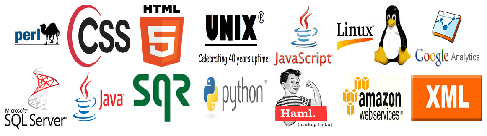

Womens Networks, Graduate Recruiting and Peer Lead Training
Further Experience
Languages, Leadership and Teamwork
Contact Me
You can contact me using the attached links, or via the form.
Goldman Sachs
Securities Lending Technology Analyst
July 2012-June 2014 & June 2011 - September 2011
As an application developer within Securities Lending Technology, I worked in a global team, developing software for Operations users and supporting both client and infrastructure production issues.
Within the team, I supported multi-regional clients including internal Operations, Finance and Securities divisions and external clients, such as Equilend and Pirum.
Projects varied from functional analysis to in-depth technical work. The projects I managed and developed were predominantly regulation driven or large multi-team efforts, giving strict deadlines whilst maintaining flexibility to changes.
The production support aspect of the role introduces a further level of business knowledge, solving time critical issues within market deadlines. This requires a high level of user interaction, working with both internal and external clients to resolve issues under high pressure situations.
During my time within Securities Lending, I had the opportunity to learn new technical skills and techniques, gain valuable business skills and knowledge and further develop my interpersonal skills.
Bupa Global
Consultant on Behalf of Woodham-Smith Consulting
June 2014 - July 2014
Whilst consulting within Bupa, I had very little time to become acquainted with their structure and systems, playing both the role of project manager and analyst.
Within 2 weeks, I was able to analyze their multiple entities, using new technologies and learning the material required as I discovered it. At the end of the contract, I was able to present my findings and suggestions in a concise and impactful manner.
University Of Nottingham
Astrophysics Department- Researcher
June 2010 - September 2010
Deducing and predicting the formation and evolution of galaxy clusters by using raw research data and images and analysing their concentration, asymmetry and clumpiness (CAS Parameters), helping to further understand the development of our universe.
The role included analysing large quantities of data with new technologies, deciphering which results can be computed to reveal the history of the galaxy and presenting the data in an accurate and concise manner in both reports and verbal discussions with the department.
Working closely within a team of Professors and Phd students, the experience of research and my skills have been nurtured by some of the most recognised and reputable physicists in modern astronomy.
Academics
Warwick University
BSc Physics & Business (Honors)
The Physics part of the degree focused on the research and analysis of raw data with Physics Laboratories (75%) and Electronic Workshops (73%).
Business section of the degree focused on organisational efficiency, management and financial principles. Modules taken include Markets, Marketing and Strategy (62%), Operations Management (60%), E-Business and Value Chains (74%).
Yale University (Coursera), Financial Markets: 2014
Taught by Sterling Professor of Economics Robert Shiller.
The course strives to offer understanding of the theory of finance and its relation to the history, strengths and imperfections of such institutions as banking, insurance, securities, futures, and other derivatives markets, and the future of these institutions over the next century.
Worksop College
A-Levels: 2007-2009
Physics (A-89%) Maths (A-81%) General Studies (A-85%) Business and Economics (B- 74%)
Worksop College
GCSE’s: 2006-2007 11 GCSE’s achieved, Grades A* to B.
Maths - A English Language - A English Literature - A Biology - B Chemistry - A Physics - B French - A* Latin - A Art - A History - A Religous Studies - A
Extra Curricular
European Women in Technology Network, Recruiting Pillar Member
Goldman Sachs, October 2012 - June 2014
Collaborating with a group to encourage female applications and retention within the technology division. I focus on organising University recruitment and intern events, including coordinating with Managing Directors for informal Q&A Sessions.
The ratio of female Summer Interns this year increased to 52%, the highest the Technology division has seen.
Warwick Graduate Recruiting, Team Member
Goldman Sachs, October 2012 - June 2014
Working within a small group to increase the applications from Warwick University and improving the understanding of Technology at Goldman Sachs. Applications from Warwick have increased 111% within the last year.
NAPA and Intern Committee, Chairperson
Goldman Sachs, February 2013 – March 2014
Coordinating over 1700 hours of peer taught technical training per annum. Partnering with other Goldman Sach’s Networks and Entities to enhance the Intern and New Graduate experience through panel sessions, coding competitions, networking events and MD round tables.
Ladies Squash Captain
University of Warwick, 2009-2012
Representing and leading the Ladies Squash Team in the BUCs and Regional leagues, organising the trials, weekly matches, training and socials. Encouraging individuals to perform to their best ability, ensuring they get the support and training they require to reach their goals. (One member of my team climbing in the World Rankings from 135th to 42nd during that time.)
Further Experience
Languages, Leadership and Teamwork
Languages

Head of the Worksop College CCF Contingency
April 2007 - July 2009
Developed the organisational and interpersonal skills that enable me to arrange and execute weekly educational and adventure training for the sixty students involved.
Royal Air Force Air Cadet Leadership Course, RAF Cranwell
Summer 2008
Trained me to excel individually and as a team member, interact with other people and adapt to new challenges.
Air Cadet Gliding Scholarship, RAF Halton
Summer 2007
I learnt to fly a Vigilant Glider Aircraft in one week, and completed a solo flight within the aircraft. Regular flying with the air cadets gave me valuable experience of physics in action which could be directly applied to my studies.